Префектура Тояма · Ивасэ и Унадзуки · сакэ
Сакэ Тоямы: портовый Ивасэ и онсэн Унадзуки, где пробуют и увозят домой местное сакэ
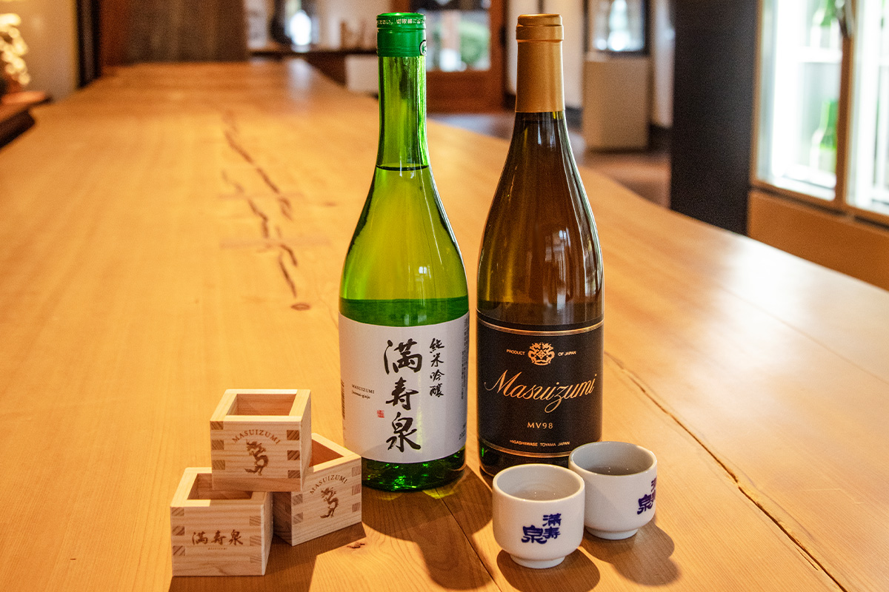
Зима в Тояме прозрачная: горы сверкают снегом, а на столе собираются дары моря и гор. Многие местные сакэ варят на родниковой воде, которую питают тающие снега. Мы поехали туда, где сакэ можно увидеть, попробовать и увезти с собой.
Ивасэ
Портовый квартал, который вернули к жизни
Ивасэ лежит на севере города Тояма. С эпохи Эдо до начала XX века сюда заходили китамаэбунэ, торговые суда, ходившие вдоль побережья Японского моря, и на главной улице, бывшей дороге Хоккоку-кайдо, до сих пор стоят дома судовладельцев и оптовых торговцев. К 2021 году здесь открылись новые лавки и рестораны, и без Ивасэ поездка в Тояму уже не обходится.
Было время, когда почти все ставни на этой улице оставались закрытыми. Тогда за возрождение квартала взялся Рюитиро Масуда, глава сакэварни «Масуда сюдзотэн» в пятом поколении.
«Сакэварню не перевезёшь в другое место. Значит, приводить свой город в порядок придётся самому»
Рюитиро Масуда
Так он и сделал. Склад семьи Мори, богатых судовладельцев, стоял пустым и шёл под снос, хотя их главный дом охраняется как важное культурное достояние. Масуда выкупил склад и восстановил его. Вокруг его сакэварни постепенно собрались самые разные люди: гурманы, предприниматели, художники.
Сакэварня
«Масуда сюдзотэн» и сакэ «Масуидзуми»
Сакэварню основали на Хоккайдо, и к концу XIX века она выросла в одно из крупных для того времени хозяйств. В 1905 году семья вернулась на нынешнее место, в Хигаси-Ивасэ, и с тех пор не покидала его. Марка «Масуидзуми» стала одной из главных в префектуре Тояма, а сакэварня продолжает пробовать новое.
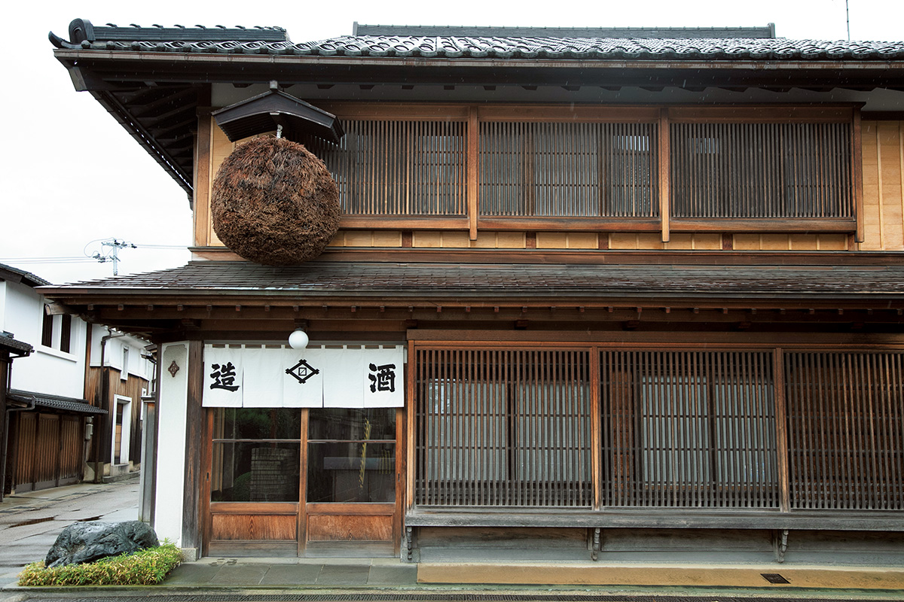
«Масуда сюдзотэн»
- Адрес
- префектура Тояма, Тояма, Хигаси-Ивасэ-мати, 269
- Телефон
- +81 76-437-9916
- Цены / Вход
- экскурсий по сакэварне нет
Лавка
«Тадзири хонтэн»: 1500 видов сакэ Тоямы под одной крышей
Лавка «Сакэ-сё Тадзири хонтэн» заняла тот самый склад семьи Мори. Нынешний хозяин, по его словам, однажды проходил мимо, когда склад ремонтировали, и был уверен, что такое ветхое здание уже не спасти. Позже лавку передал ему прежний владелец.
Потолки здесь высокие, глиняные стены оставлены как есть, и внутри просторно. У входа стоят деревянные шкафчики, доставшиеся от старой общественной бани: в них можно убрать вещи и спокойно пройтись по огромному погребу, где хранится около 1500 видов сакэ. Такое количество поначалу пугает, но хозяин дипломированный сомелье по сакэ и по вину, и выбирать вместе с ним одно удовольствие.
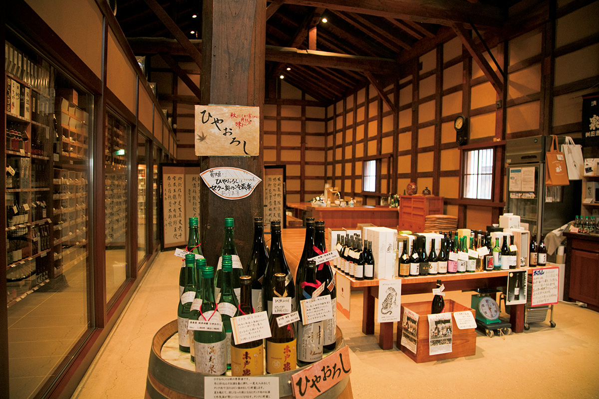
В погребе держат 13 °C. Сакэ от «Масуда сюдзотэн» здесь особенно много: свежее «Масуидзуми» нового урожая и винтажная серия 1992 года.
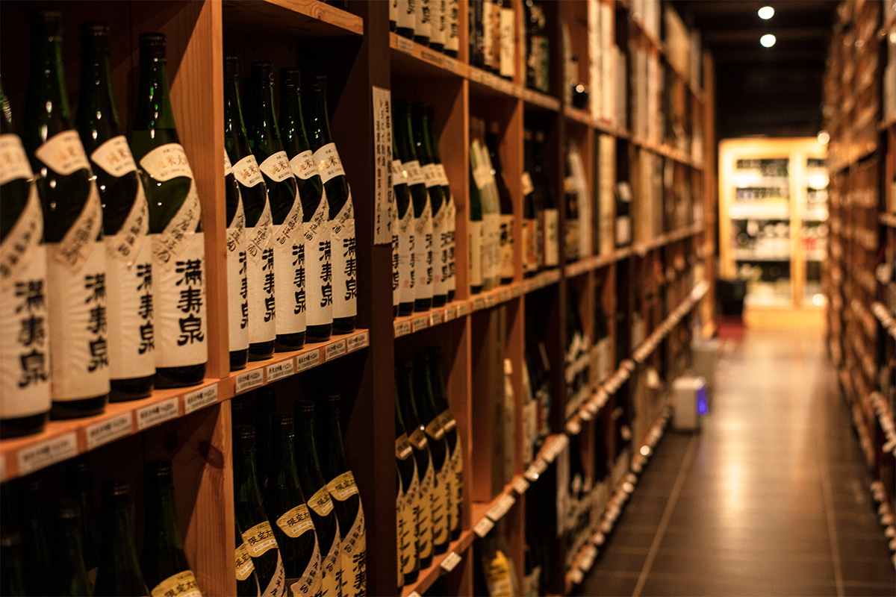
«Сакэ-сё Тадзири хонтэн»
- Адрес
- префектура Тояма, Тояма, Хигаси-Ивасэ-мати, 102
- Телефон
- +81 76-437-9674
- Часы работы
- 10:00–19:00, в воскресенье до 18:00
- Выходные
- понедельник
Дегустация
«Сасэки»: сто видов «Масуидзуми»
Стоячий бар «Сасэки» устроен в доме семьи Мияги, тоже судовых торговцев, и в 2021 году ему исполнялось три года. В зале стоит огромный ствол криптомерии. Это дерево, в которое ударила молния на территории храма Дзуйсэн-дзи в городе Нанто.
В баре можно попробовать около ста видов «Масуидзуми». Рядом со стойкой из цельной доски кипариса хиноки стоит холодильная витрина, и сакэ для сравнения наливают себе сами. Пробная порция стоила от 200 иен в 2021 году. Рекомендуем три сакэ собственной серии бара MV, которые выдерживают в дубовых бочках.
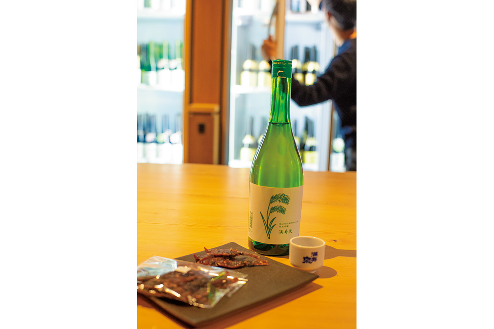
«Сасэки»
- Адрес
- префектура Тояма, Тояма, Хигаси-Ивасэ-мати, 93
- Телефон
- +81 80-2962-6683
- Часы работы
- 10:00–17:00
- Выходные
- вторник
Пиво
KOBO Brew Pub: чешское пиво в рисовом складе
Пивной паб KOBO Brew Pub занимает бывший рисовый склад семьи Баба, ещё одного торгового дома Ивасэ. Пиво здесь варят по традиционной чешской технологии. Паб ведут пивовар из Чехии и управляющий из Словакии: они познакомились на ярмарке крафтового пива в Тояме, сразу нашли общий язык и вместе с жёнами-японками осели в Ивасэ.
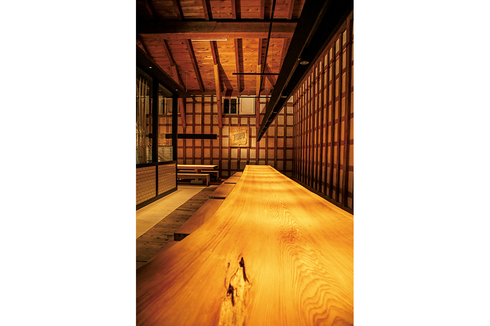
На стойке нарисованы они оба, Масуда и жители Ивасэ. Рисунок сделал французский иллюстратор, который живёт в квартале, и по нему видно, каким оживлённым стал Ивасэ. В 2021 году паб собирался открыть в Ивасэ ещё одну пивоварню.
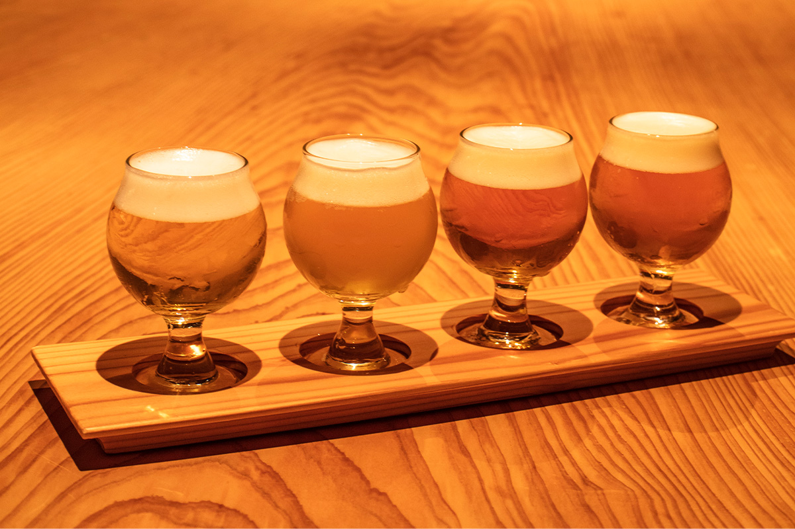
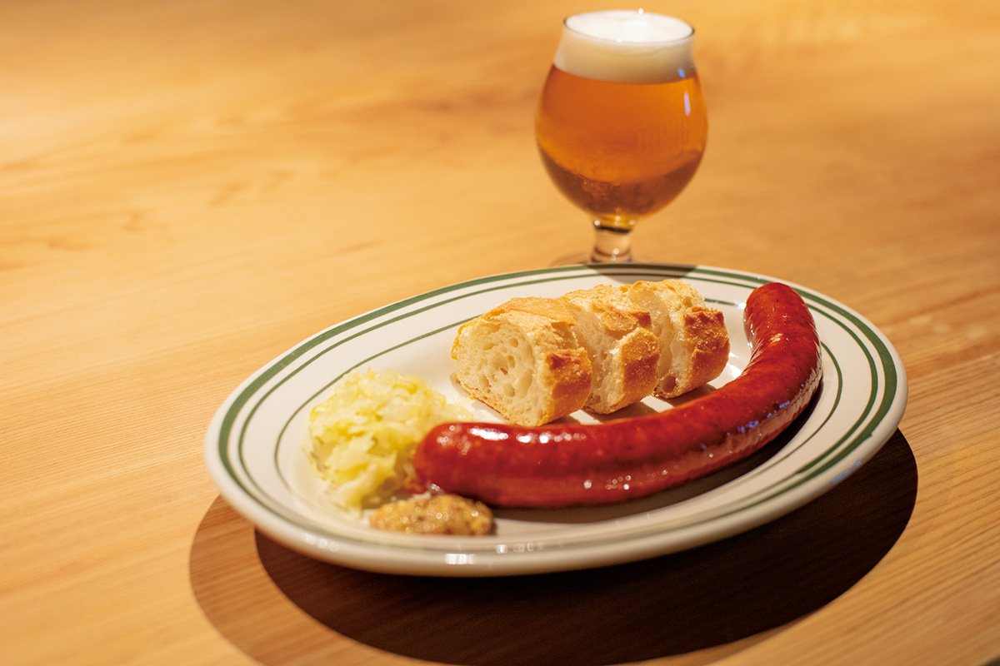
Бывают и сезонные сорта из местных продуктов. Кроме паба, по улице стоят суши-бар, лавка при гостевом доме и другие новые места, и квартал продолжает меняться.
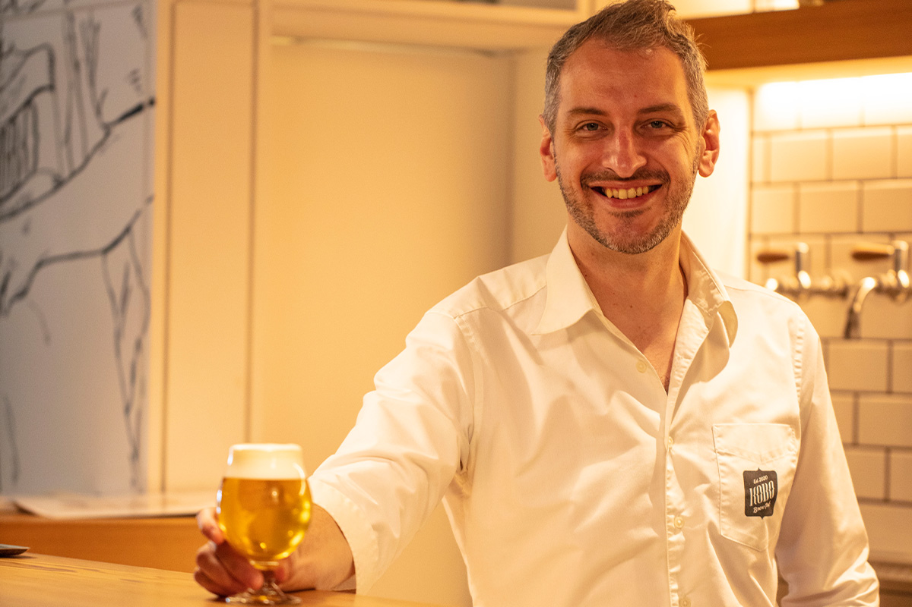
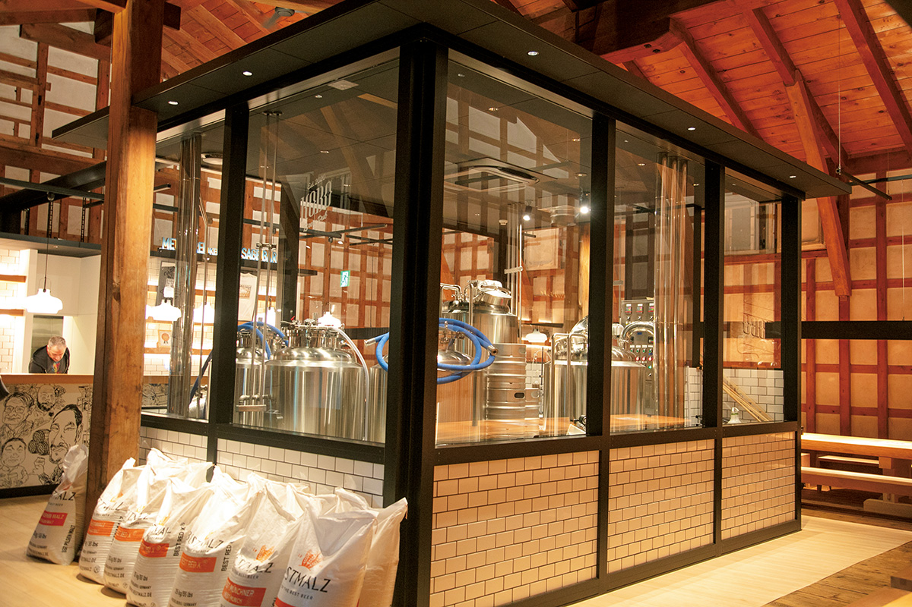
KOBO Brew Pub
- Адрес
- префектура Тояма, Тояма, Хигаси-Ивасэ-мати, 107-2
- Телефон
- +81 80-3047-9916
- Часы работы
- 11:00–18:00
- Выходные
- вторник
- Как добраться
- из Токио на синкансэне Хокурику до станции Тояма около 2 часов 8 минут, от северного выхода станции Тояма по железной дороге до станции Кэйриндзё-маэ около 23 минут
Керамика
Мастерская Гаку Сякунаги
Керамист Гаку Сякунага тоже оказался в Ивасэ благодаря Масуде. Он вырос в семье, где гончарным делом занимаются из поколения в поколение. В университете его увлекла объёмная форма, и он учился скульптуре. Глина и приёмы керамики притягивали его всё сильнее, но продолжать семейное дело он не решался и думал вовсе оставить керамику.
«Мы как-то случайно выпивали с Масудой, и он прочёл всё, что у меня на душе. А потом сказал: я тут, знаешь, строю город. После этого разговора я решился открыть свою мастерскую и работать с глиной»
Гаку Сякунага
Мастерская устроена в доме, который больше 30 лет простоял пустым. Сякунага отремонтировал его и добавил то, что ему близко: например, решётчатые двери сделал его друг. В таком пространстве его работы смотрятся ещё лучше.
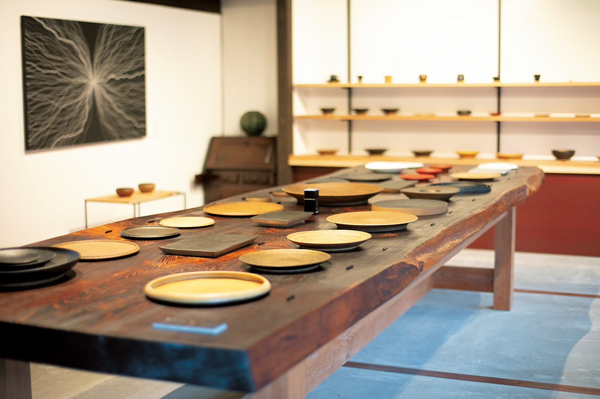
Сякунага делает посуду и для ресторанов по всей Японии, и повара обращают на его работы особое внимание.
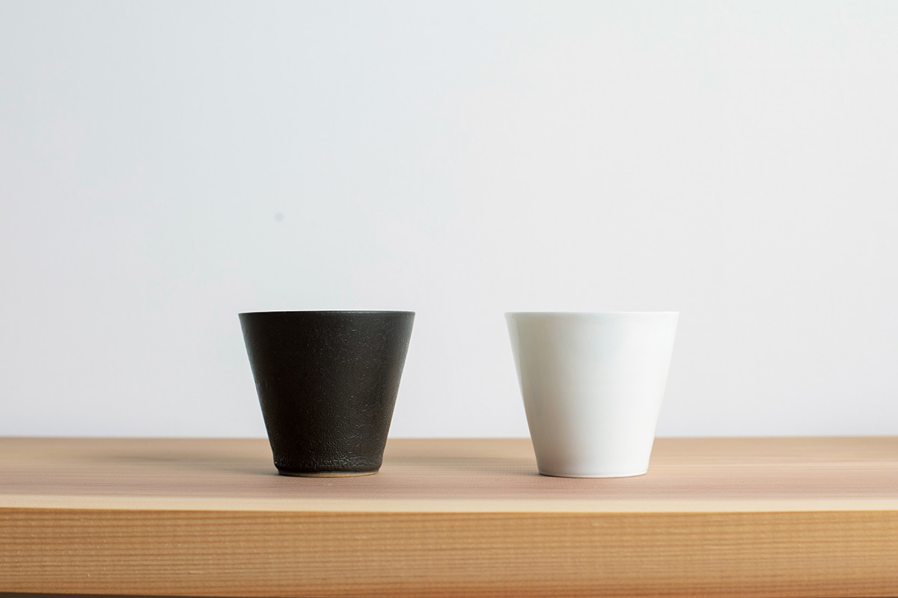
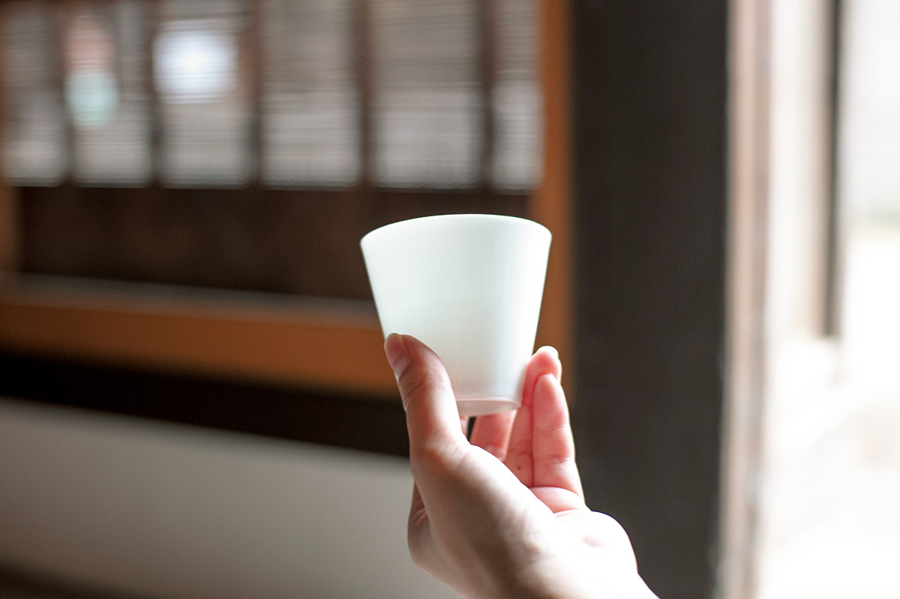
«Пейте сакэ Тоямы из чашки, в которой оно становится вкуснее»
Гаку Сякунага
Мастерская Гаку Сякунаги
- Адрес
- префектура Тояма, Тояма, Хигаси-Ивасэ-мати, 146
- Телефон
- +81 90-6812-9549
- Цены / Вход
- о визите нужно договориться заранее
Унадзуки
Онсэн у входа в ущелье Куробэ
По дороге в Унадзуки перед нами во весь горизонт встал заснеженный хребет Татэяма. Сразу представляешь, как будешь сидеть в горячей воде и смотреть на снег.
Онсэн Унадзуки стоит у входа в ущелье Куробэ и открылся в 1923 году. Горячая вода здесь бьёт обильно, и во многих гостиницах она течёт в ванны прямо из источника, без повторного нагрева. Онсэн кажется глубоко в горах, но от ущелья до рыбного порта Куробэ всего около 20 минут на машине. Море и горы рядом, поэтому здесь едят сезонные дары и моря, и гор.
После землетрясения на полуострове Ното 1 января 2024 года вагончики Kurobe Gorge Railway в сезоны 2024–2026 годов ходили только до станции Нэкомата. С 1 октября 2026 года вагончики снова идут по всей линии до станции Кэякидайра.
Рёкан «Энраку»
Одна из таких гостиниц, «Энраку», работает уже 80 лет, и его держит одна семья. Все номера смотрят на ущелье, особенно ценят номера с собственной открытой ванной: в любое время года из них открывается сильный вид. По залам ненавязчиво расставлены работы мастеров, связанных с Тоямой.
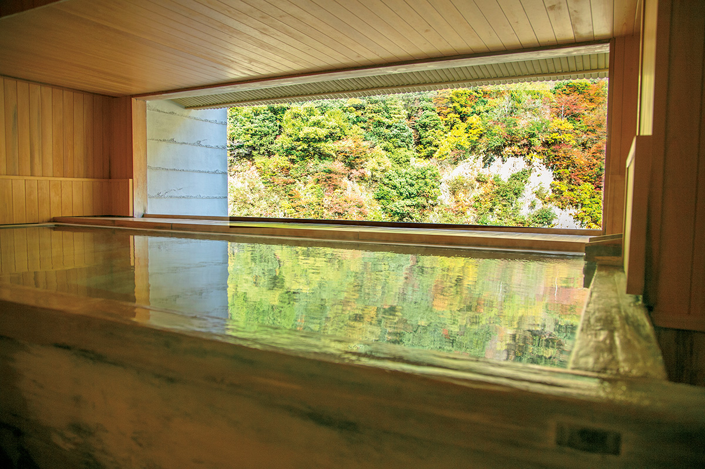
Ужин здесь готовят из лучшего снежного краба хон-дзуваи, которого ловят в заливе Тояма.
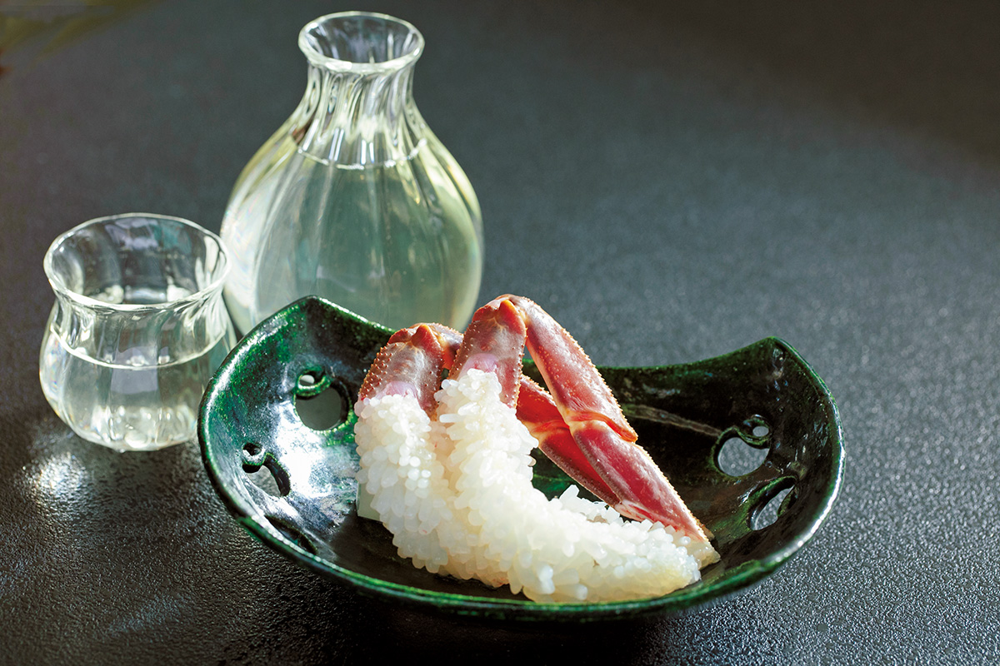
К рыбе и морепродуктам Тоямы хорошо подходит строгое по вкусу сакэ «Кацукома» дзюммай гиндзё. Сакэварня делает ставку на качество и не варит его много, так что попробовать его стоит хотя бы раз.
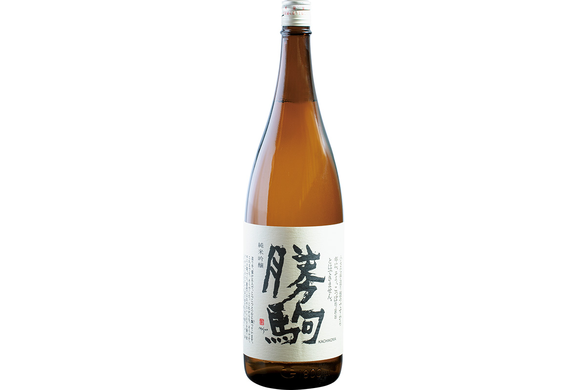
«Энраку»
- Адрес
- префектура Тояма, Куробэ, Унадзуки-онсэн, 347-1
- Телефон
- +81 765-62-1211
- Номера
- 61
- Цены / Вход
- номер с открытой ванной, ночь с завтраком и ужином от 43 050 иен с налогом и сервисным сбором
«Икэдзири-но сакэтэн»: стойка в винном магазине
По дороге домой стоит заглянуть в лавку «Икэдзири-но сакэтэн» в самом онсэне. Здесь много местного сакэ, в том числе ограниченного непастеризованного. У стойки можно выпить немного на пробу: два вида стоили 300 иен в 2021 году, а к ним подают закуски вроде домашней сушёной редьки харихари, тарелка за 200 иен. Сезонного местного сакэ много в бутылках по 720 мл, их удобно везти в подарок.
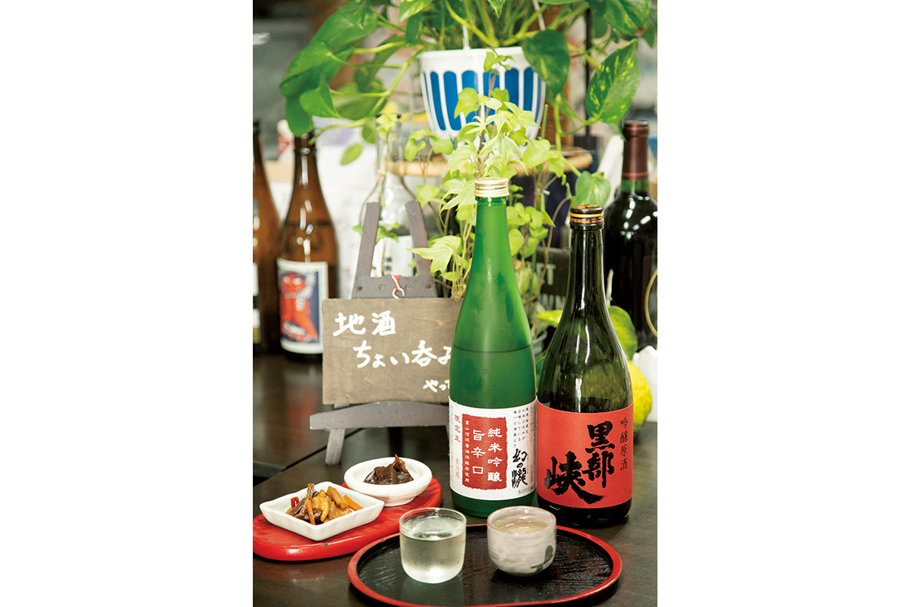
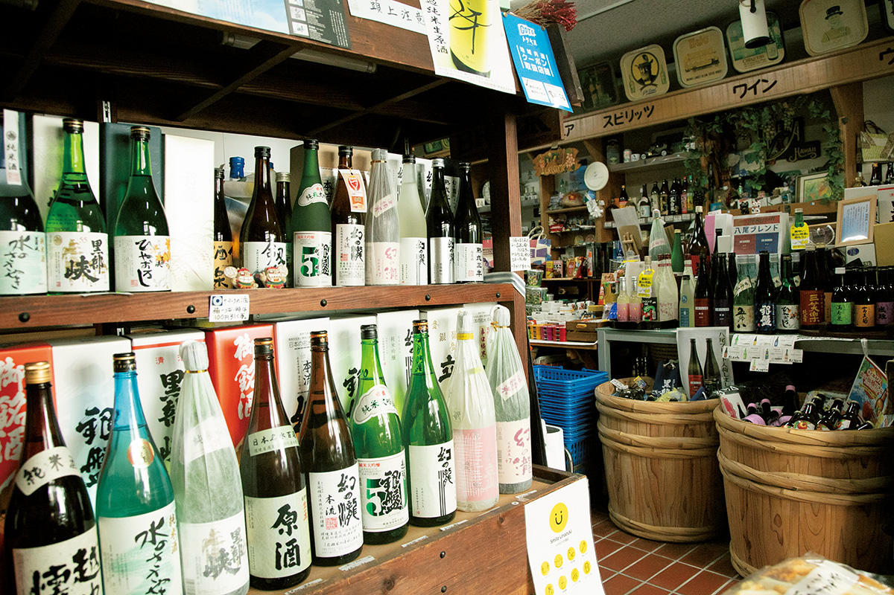
«Икэдзири-но сакэтэн»
- Адрес
- префектура Тояма, Куробэ, Унадзуки-онсэн, 252-5
- Телефон
- +81 765-62-1403
- Часы работы
- 9:00–19:00
- Выходные
- нерегулярно
- Как добраться
- из Токио на синкансэне Хокурику до станции Куробэ-Унадзукионсэн около 2 часов 20 минут, от станции Син-Куробэ по железной дороге до станции Унадзуки-онсэн около 32 минут
Сакэварни
Сакэ Унадзуки
Чуть дальше от онсэна стоят сакэварни, где при погребе работает магазин. Можно почувствовать атмосферу старой сакэварни и увезти домой любимое сакэ, чтобы продлить поездку.
Сакэварня «Гинбан» основана в 1910 году. Её сакэ варят на воде из родников конуса выноса реки Куробэ, а известна она серией дзюммай дайгиндзё «50» и сакэ «Комэ-но син». «Эттю 50» из местного риса «Томи-но ка», отшлифованного до 50%, чисто проходит и подходит к каждодневной еде. Вкус у него сухой, со свежим зелёным ароматом. В 2021 году бутылка 720 мл стоила 1366 иен, крепость 15%.
Сакэварня «Микунихарэ» получила это имя в эпоху Мэйдзи. Её сакэ «Мабороси-но таки» варят на мягкой воде, которая бьёт из-под земли на глубине 50 метров прямо на территории. Здесь держатся старых приёмов и пробуют новое. «Мабороси-но таки» дзюммай гиндзё из риса «Гохякумангоку», отшлифованного до 60%, пахнет спелыми фруктами и мягко раскрывается на языке. В 2021 году бутылка 720 мл стоила 1485 иен, крепость 15%.
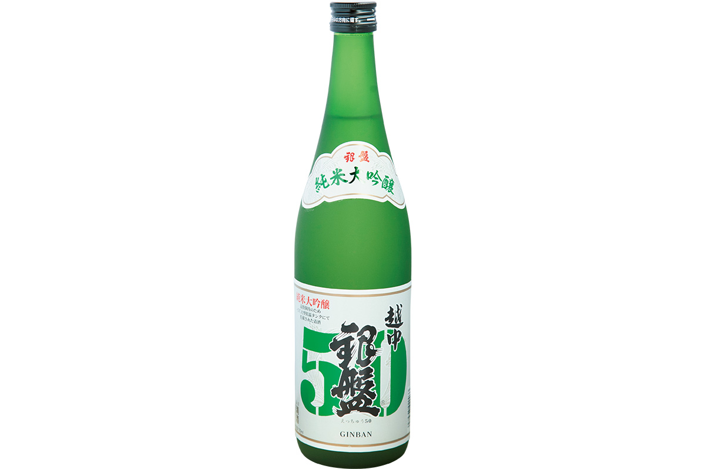
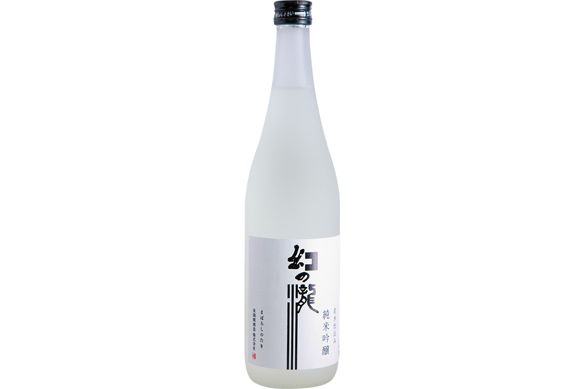
Зимой 2021–2022 годов гостям, потратившим на проживание в Тояме от 10 000 иен за поездку, обещали подарок на 5000 иен: сакэ и другие зимние местные продукты; акция шла до 28 февраля 2022 года.
Фото: Киёно Хаттори.